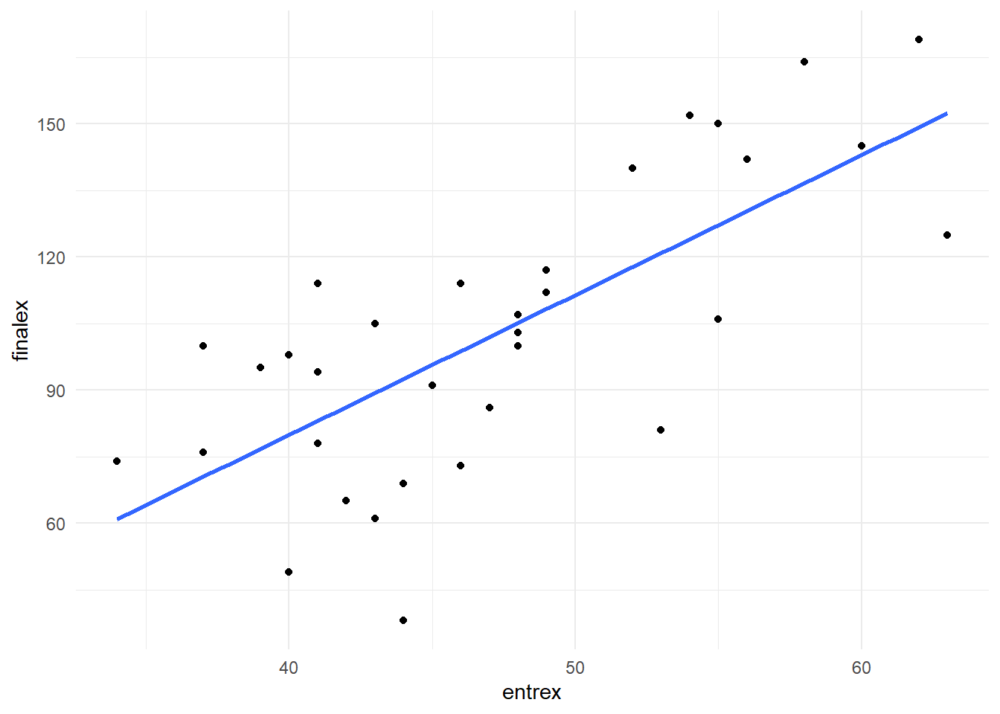

Analysing the model
Suppose we want to construct a model to predict final university exam scores. This is the task faced by some admissions tutors! We’ll start off with a simple regression model, then work up to multiple regression.
Load the ExamData dataset from https://bit.ly/37GkvJg. This contains exam scores for students taking a university course. (Make sure tidyverse is loaded first!)
Learning tip
Try typing out the code today if you usually cut and paste it to R!
ExamData <- read_csv('https://bit.ly/37GkvJg')
ExamData %>% head()
> # A tibble: 6 x 7
> finalex entrex age project iq proposal attendance
> <dbl> <dbl> <dbl> <dbl> <dbl> <dbl> <dbl>
> 1 38 44 21.9 50 110 44 0
> 2 49 40 22.6 75 120 70 0
> 3 61 43 21.8 54 119 54 0
> 4 65 42 22.5 60 125 53 0
> 5 69 44 21.9 82 121 73 0
> 6 73 46 21.8 65 140 62 0These are the variables in ExamData:
finalex: final examination marksentrex: entrance examination marksage: age in yearsproject: dissertation project marksiq: IQ scoreproposal: dissertation proposal gradeattendance: 1 = high attendance; 0 = low attendance
First, let’s ask whether finalex is predicted by entrex. Plot these variables:
ExamData %>%
ggplot(aes(x = entrex, y = finalex)) +
geom_point() +
geom_smooth(se=F, method=lm)
There looks to be a positive association - students with higher entrance exam scores tend to have higher final exam scores. A good start!
To conduct the simple regression with finalex as the outcome variable, and entrex as the predictor variable, use lm:
m1 <- lm(finalex ~ entrex, data = ExamData) Explanation: finalex ~ entrex can be read as “finalex is predicted by entrex”. The model is stored in m1.
View the intercept of the regression line and the coefficient for entrex:
m1
>
> Call:
> lm(formula = finalex ~ entrex, data = ExamData)
>
> Coefficients:
> (Intercept) entrex
> -46.305 3.155We can therefore write the regression equation:
\(Predicted\ final\ exam\ score = -46.305 + 3.155(entrance\ exam)\)
Use summary(m1) to display statistical analysis of the model:
summary(m1)
>
> Call:
> lm(formula = finalex ~ entrex, data = ExamData)
>
> Residuals:
> Min 1Q Median 3Q Max
> -54.494 -21.185 3.733 18.124 30.969
>
> Coefficients:
> Estimate Std. Error t value Pr(>|t|)
> (Intercept) -46.3045 25.4773 -1.817 0.0788 .
> entrex 3.1545 0.5324 5.925 1.52e-06 ***
> ---
> Signif. codes: 0 '***' 0.001 '**' 0.01 '*' 0.05 '.' 0.1 ' ' 1
>
> Residual standard error: 22.7 on 31 degrees of freedom
> Multiple R-squared: 0.531, Adjusted R-squared: 0.5159
> F-statistic: 35.1 on 1 and 31 DF, p-value: 1.52e-06Explanation of the output:
Residuals: provides an indication of the discrepancy between the values of finalex predicted by the model (i.e., the regression equation) and the actual values of finalex. If the model does a good job in predicting finalex, the residuals should be relatively small.
- The difference between
MinandMaxgives us some idea of the range of error in the prediction offinalexscores. The difference in3Qand1Qis the interquartile range. Themedianof the residuals is 3.73.
Coefficients: contains tests of statistical significance for each of the coefficients. The values in the column headed Pr(>|t|) are the p-values associated with the t-values for the coefficients for each predictor. The t-values test a null hypothesis that the coefficients are equal to zero. A p-value less than .05 indicates that a predictor is statistically significant.
The row for the
(intercept)reports a t-test for whether the value of the intercept differs from zero. We’re not usually interested in this test (so don’t report it).The row for
entrextests whether the value of its coefficient (3.15) differs from zero. A coefficient of zero would be expected if the predictor explained no variance in the outcome variable. The coefficient forentrex(3.15) is clearly greater than zero. We can report this by saying thatextrexis a statistically significant predictor offinalex, b = 3.15, t(31) = 5.92, p < .001.
Multiple R-squared: This is \(R^2\) - the proportion of variance in finalex explained by entrex. Here, \(R^2\) = 0.531. So approximately half of the variance in finalex is explained by entrex. It’s usually referred to simply as “R-squared” or \(R^2\).
- \(R^2\) is often reported as a percentage. To get this, simply multiply the value by 100. i.e., 0.531 x 100 = 53.10%.
Adjusted R-squared: is an estimate of \(R^2\), but adjusted for the population. Despite the usefulness of this statistic, most studies still tend to report only the (unadjusted) \(R^2\) value. If reporting the Adjusted R-squared value, be sure to label it clearly as such. Here, Adjusted R-squared = 0.52.
F-statistic: This compares the variance in finalex explained by the model with the variance that it does not explain (i.e., explained variance divided by unexplained variance). Higher values of F indicate that the model explains greater variance in an outcome variable. If the p-value associated with the F-statistic is less than .05, we can say that the model significantly predicts the outcome variable.
Hence, we can say that a model consisting of entrex alone is a significant predictor of finalex, F(1, 31) = 35.10, p < .001. Higher entrex scores tend to be associated with higher finalex scores. If our model did not explain any variance in finalex, we wouldn’t expect this to be statistically significant.
- In simple regression, the null hypothesis being tested on the F-statistic is that the slope of the regression line in the population is equal to zero. This is actually equivalent to the t-test on the
entrexcoefficient. So in simple regression, report the F-statistic for the overall regression or the t-test on the coefficient (not both). This equivalence between F and t does not hold true for multiple regression, as we shall see later.
Now you have a go
Run another simple regression:
set
finalexas the outcome variable andprojectas the predictor variablestore the output in a variable with a different name (
m2)then display the output of
m2usingsummary().
m2 <- lm(finalex ~ project, data= ExamData)
summary(m2)
>
> Call:
> lm(formula = finalex ~ project, data = ExamData)
>
> Residuals:
> Min 1Q Median 3Q Max
> -64.015 -21.686 -0.573 21.758 70.427
>
> Coefficients:
> Estimate Std. Error t value Pr(>|t|)
> (Intercept) 4.6968 40.1677 0.117 0.9077
> project 1.4442 0.5861 2.464 0.0195 *
> ---
> Signif. codes: 0 '***' 0.001 '**' 0.01 '*' 0.05 '.' 0.1 ' ' 1
>
> Residual standard error: 30.32 on 31 degrees of freedom
> Multiple R-squared: 0.1638, Adjusted R-squared: 0.1368
> F-statistic: 6.072 on 1 and 31 DF, p-value: 0.01948
Answer the following: (report statistics to 2 decimal places)
What is the value of the coefficient for
project?What proportion of the variance in
finalexis explained byproject?: \(R^2\) = (or %).Write down the regression equation (on a bit of paper).
- \(Predicted\ final\ exam\ score = 4.70 + 1.44(project)\)
Is
projectalone a statistically significant predictor offinalex, as indicated by the F-statistic?Report the F-ratio in APA style, that is, in the form
F(df1, df2) = F-statistic, p = p-value:
F(1, 31) = 6.07, p = .02
- Individuals with project scores tended to have higher final exam scores.